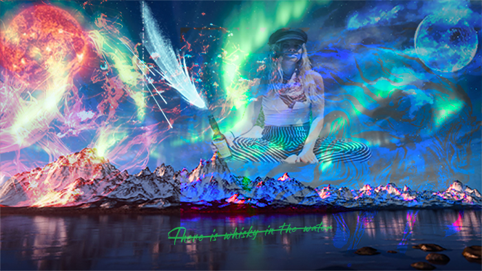
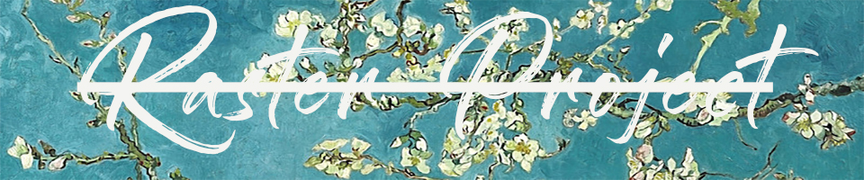

In my raster project, I wanted to combine the concept of fire and ice. I combined several images together and played around with the opacity until it appeared as if the horse is running on top of the water fading into the moon with the fire slowly progressing into ice or day turning into night.